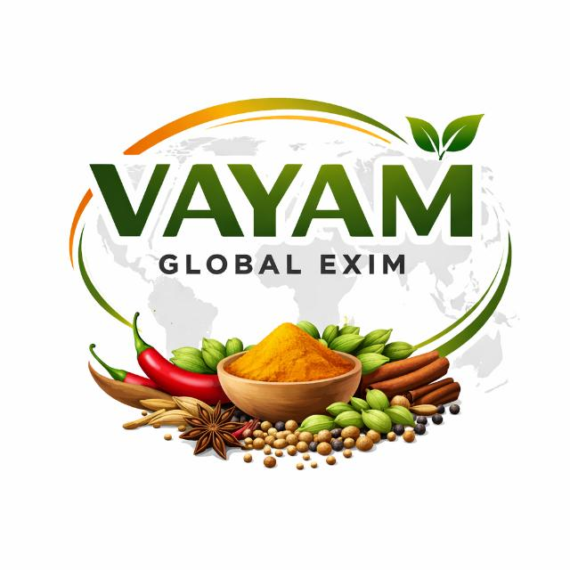

01 / Evolution 01
Classic↗
The live Vayam, carefully improved.
Original forest-green hero, familiar spice photograph and complete business story. Better mobile navigation, searchable products and a reviewed enquiry draft.

Vayam Development studioTwo careful evolutions of the live website. Two more ambitious expressions of the same business. Forest green, warm ivory, Indian food and a clear sourcing conversation remain the foundation.
Original forest-green hero, familiar spice photograph and complete business story. Better mobile navigation, searchable products and a reviewed enquiry draft.
The same green, ivory and copper identity with a lighter composition, photographic category shortcuts, product comparison and a direct enquiry path.
Large-scale spice photography, generous typography and an editorial category layout, supported by the same factual sourcing and documentation content.
A rich forest-green opening, four photographic category tiles, warm saffron accents and a simpler product-to-enquiry journey.
Buyer tools
32 products and programmes, category search, comparison, a sourcing list and reviewed email / WhatsApp drafts.
Measurement
Consent controls and sanitised event measurement are retained. External analytics remain disabled in these previews.
Worldwide discovery
Business identity, useful sourcing content and the discovery plan are retained. Development pages are kept out of search indexes.
The production website is unchanged. Earlier experiments remain recoverable in Git history; these are the only four designs in this review collection. These previews are for design selection, not a claim of deployment or activated visitor tracking.
Signature develops the product-led presentation seen at Diaspora Co.; Trade takes cues from the ingredient and buyer-solution navigation at ofi. These are design references, not templates or claims that Vayam has their facilities, supply chain or certifications. No competitor copy, imagery or testimonials are reused.